ĐIỂM CẦU TRƯỜNG TH - THCS ĐÔNG XUÂN DỰ TRỰC TUYẾN HỘI NGHỊ TỔNG KẾT NĂM HỌC VÀ TUYÊN DƯƠNG CÁC TẬP THỂ, CÁ NHÂN ĐẠT THÀNH TÍCH CAO TRONG CÁC CUỘC THI NĂM HỌC 2020-2021 VÀ TRIỂN KHAI NHIỆM VỤ NĂM HỌC 2021-2022
Sáng nay ngày 29 / 8 / 2021 Phòng giáo dục và đào tạo huyện Đông Hưng tổ chức trực tuyến "Hội nghị tổng kết năm học và tuyên dương các tập thể, cá nhân đạt thành tích cao trong các cuộc thi năm học 2020 - 2021 và triển khai nhiệm vụ năm học 2021 - 2022. Tại điểm cầu trường TH - THCS Đông Xuân tập thể cán bộ giáo viên, nhân viên, các em học sinh tiêu biểu đã có mặt từ rất sớm. Đảm bảo tốt việc giữ gìn an toàn trong công tác phòng chống dịch Covid 19. Dự Hội nghị nghiêm túc và đã lĩnh hội đầy đủ các nội dung trong Hội nghị
Thật vui mừng và vinh dự cho tập thể cán bộ giáo viên, nhân viên và các em học sinh của nhà trường đã được xướng tên trong danh sách tuyên dương của Hội nghị .
* Về danh hiệu tập thể:
Nhà trường hoàn thành xuất sắc nhiệm vụ năm học, đạt danh hiệu "Tập thể lao động tiên tiến", là một trong các đơn vị hai năm liền hoàn thành xuất sắc nhiệm vụ, được chủ tịch UBND tỉnh Thái Bình tặng bằng khen. Có được thành tích trên chúng ta không kể tới vai trò của người lãnh đạo của nhà trường đó là thầy giáo Hà Đức Thiện, luôn quan tâm sâu sát đối tới tất cả mọi hoạt động trong nhà trường, làm tốt công tác tham mưu để có được sự quan tâm của các cấp các ngành, đặc biệt là chính quyền địa phương, các bậc phụ huynh luôn ủng hộ dành sự quan tâm ưu ái, đầu tư cơ sở vật chất kịp thời cho nhà trường đó cũng chính là nền móng để nhà trường phát triển lên. Quan trọng nữa đó là sự đoàn kết và chia sẻ. Lúc này đây tôi thấy thấm nhuần lời dạy của Bác Hồ "Đoàn kết là sức mạnh vô địch". Chính sự thống nhất từ trong ban giám hiệu gồm thầy giáo Hà Đức Thiện Hiệu trưởng nhà trường; thầy giáo Bùi Hữu Kiêm phó hiệu trưởng nhà trường phụ trách chuyên môn khối THCS; cô giáo Vũ Thị Ánh Hồng phó hiệu trưởng nhà trường phụ trách chuyên môn khối TH cộng với tinh thần đoàn kết trách nhiệm của tập thể cán bộ giáo viên, nhân viên trong nhà trường đã luôn kề vai sát cánh cùng nhau vượt qua mọi khó khăn trong quá trình thực hiện nhiệm vụ năm học để rồi gặt hái được nhiều thành quả tốt đẹp, xây dựng nhà trường vững mạnh. Để có được thành tích cao trong các cuộc thi thì công tác mũi nhọn chính là đòn bẩy vạn năng, ta không thể không nhắc tới vai trò của các thầy giáo, cô giáo, đặc biệt là các thầy cô giáo mang trọng trách bồi dưỡng các đội tuyển HSG. Có rất nhiều các thầy cô giáo rất nhiều năm liền bồi dưỡng học sinh giỏi có số học sinh giỏi nhiều, đạt số điểm cao và giải cao như cô giáo Vũ Thị Kim Thúy; cô giáo Vũ Thị Thư Linh , thầy giáo Vũ Đình Thư,...và nhiều các thầy cô giáo nữa ở cả hai cấp học.
* Về danh hiệu cá nhân:
a/ Giáo viên
1 . Cô giáo Trần Thị Liễu - Đạt thành tích xuất sắc trong thi giảng GVDG, GVCNG cấp huyện năm học 2020 - 2021
2 . Cô giáo Phạm Thị Yến - Đạt thành tích xuất sắc trong thi giảng GVDG, GVCNG cấp huyện năm học 2020 - 2021
b/ Học sinh
1/ Em Đặng Hồng Nam - Đạt giải cao trong cuộc thi an toàn giao thông cho nụ cười ngày mai cấp toàn quốc năm học 2020 - 2021
2 / Em Vũ Tiến Thành Đạt giải nhất giao lưu câu lạc bộ Toán cấp tiểu học cấp huyện năm học 2020 - 2021
3 / Em Phan Bảo Châu đạt giải nhì cuộc thi Trạng Nguyên Tiếng Việt trên internet dành cho học sinh lớp 4 cấp tỉnh năm học 2020 - 2021
4 / Em Trần Phương Anh đạt giải nhất cuộc thi Trạng Nguyên Tiếng Việt trên internet dành cho học sinh lớp 5 cấp tỉnh năm học 2020 - 2021
5 / Em Vũ Tiến Thành đạt giải nhì cuộc thi Trạng Nguyên Tiếng Việt trên internet dành cho học sinh lớp 5 cấp tỉnh năm học 2020 - 2021
6 / Em Đào Thanh Hà đạt giải nhì cuộc thi Trạng Nguyên Tiếng Việt trên internet dành cho học sinh lớp 5 cấp tỉnh năm học 2020 - 2021
7 / Em Đặng Hằng Hải Đoạt giải nhì môn cờ vua tại giải các môn thể thao học sinh cấp tỉnh năm học 2020 - 2021
8 / Em Đặng Thái Dương Đoạt giải nhì môn điền kinh tại giải các môn thể thao học sinh cấp tỉnh năm học 2020 - 2021
9 / Em Vũ Tùng Dương Đoạt giải ba môn bóng rổ tại giải các môn thể thao học sinh cấp tỉnh năm học 2020 - 2021
10 / Em Đặng Quang Huy Đoạt giải ba môn bóng rổ tại giải các môn thể thao học sinh cấp tỉnh năm học 2020 - 2021
11 / Em Vũ Văn Đạt Đoạt giải ba môn bóng rổ tại giải các môn thể thao học sinh cấp tỉnh năm học 2020 - 2021
Bước vào năm học mới 2021 - 2022 thầy và trò trường TH - THCS Đông Xuân phát huy những mặt mạnh, những thành tích đã đạt được ở năm học trước, trên cơ sở đó xây dựng mục tiêu chiến lược mới của nhà trường trong năm học 2021 - 2022 đưa nhà trường phát triển hơn nữa.
Dưới đây là một số hình ảnh tại điểm cầu trường TH - THCS Đông Xuân sáng nay.
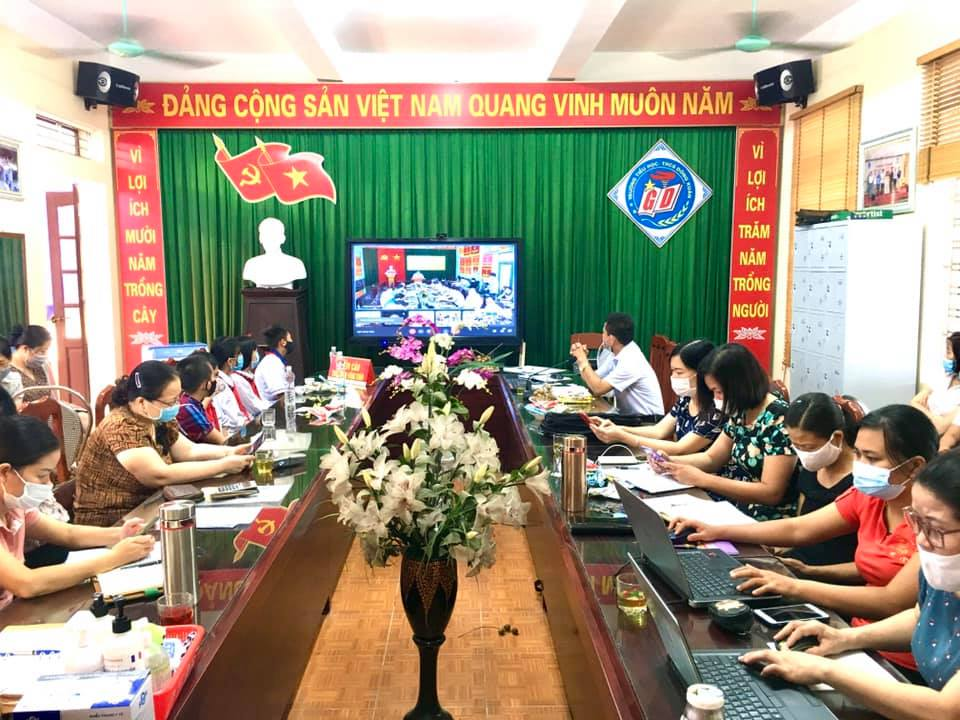
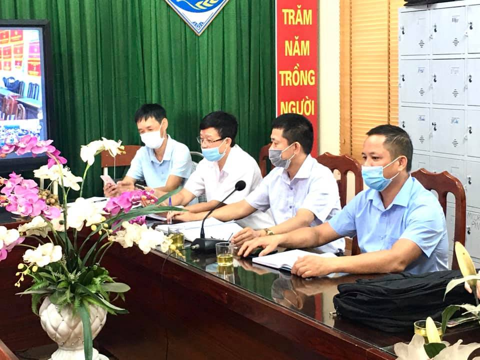
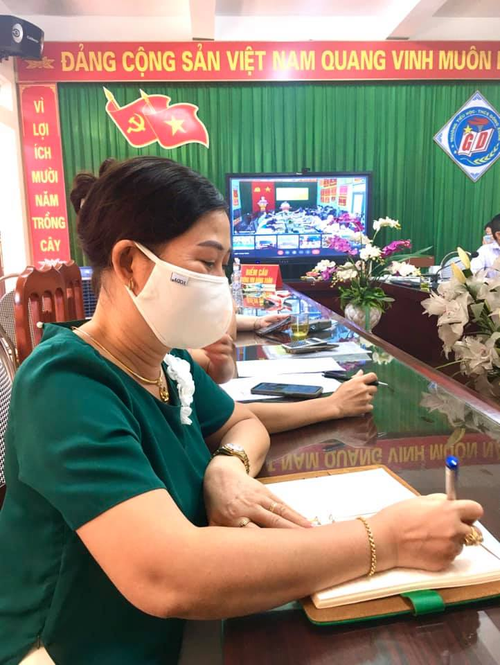
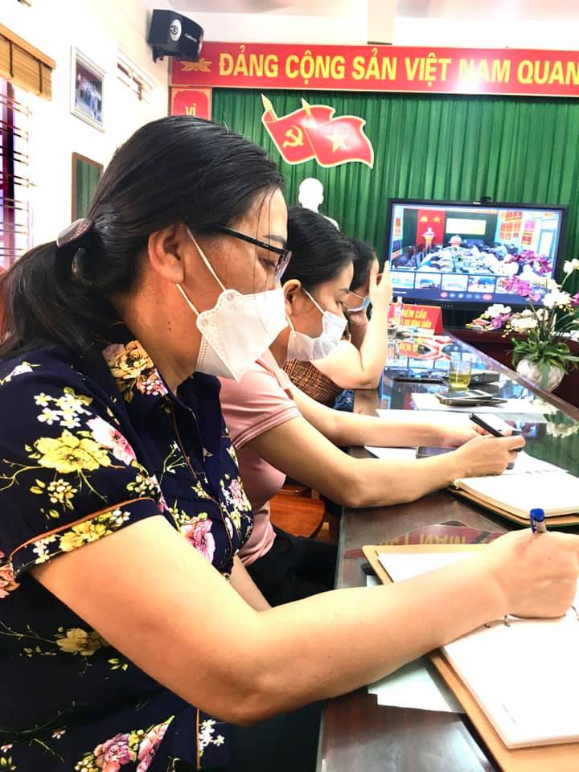
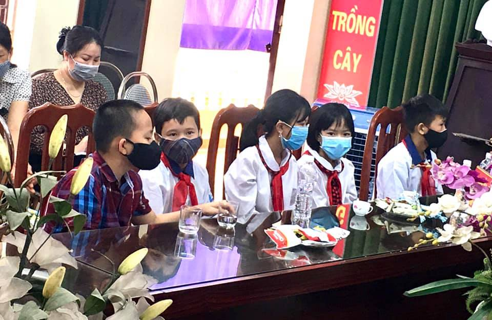
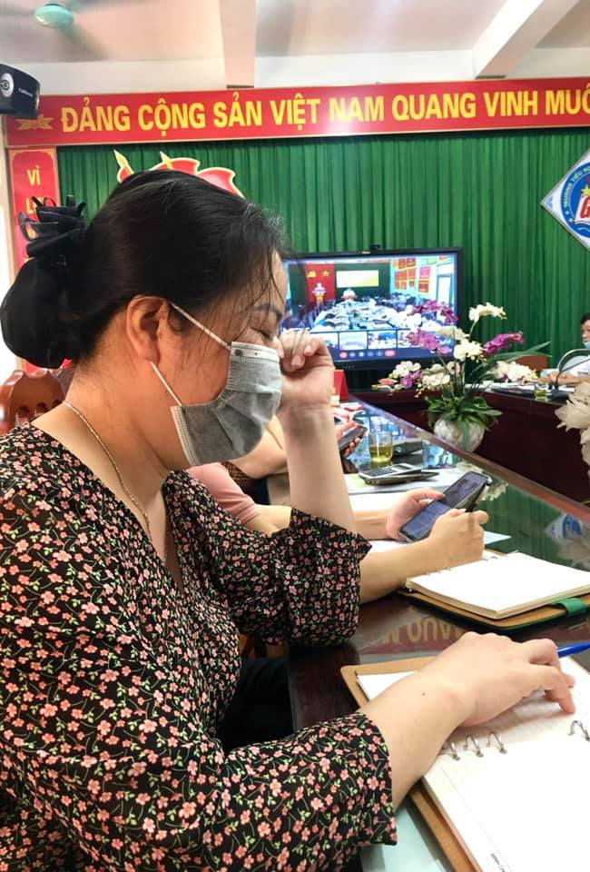
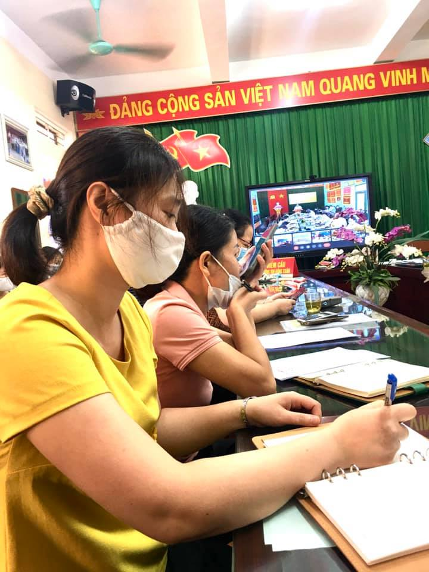
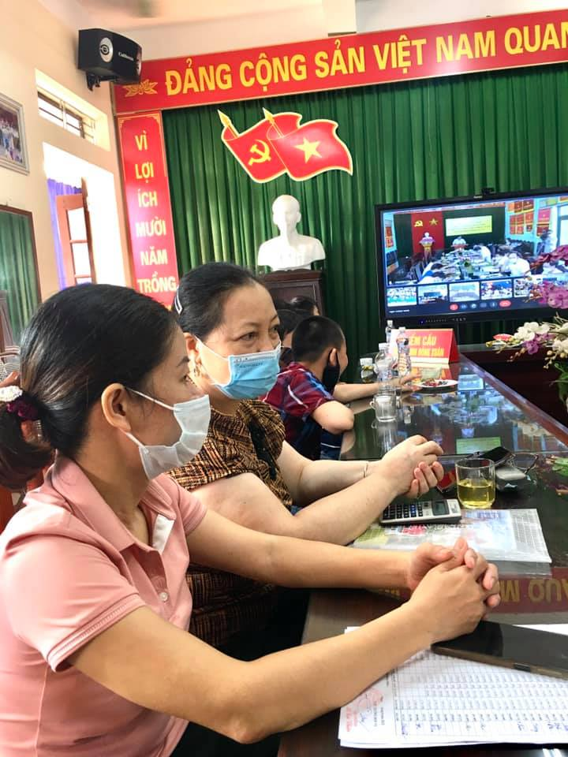
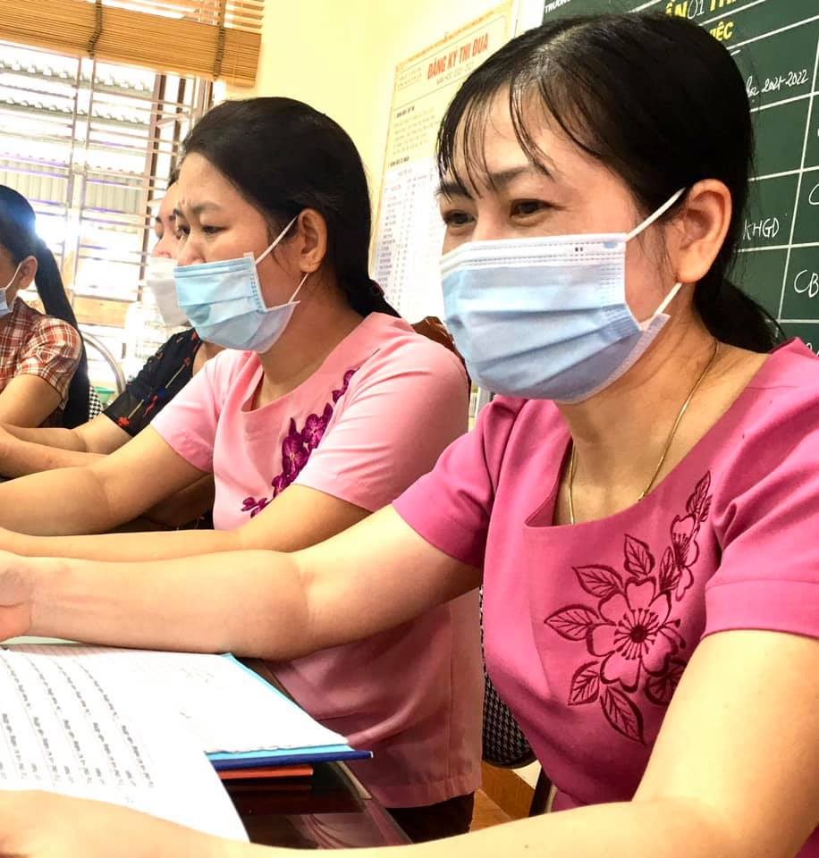
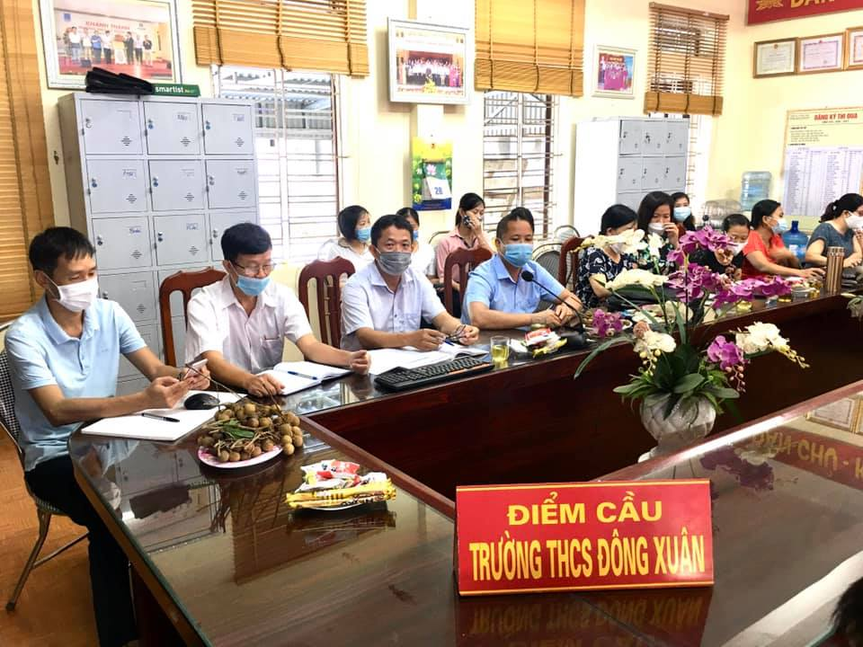
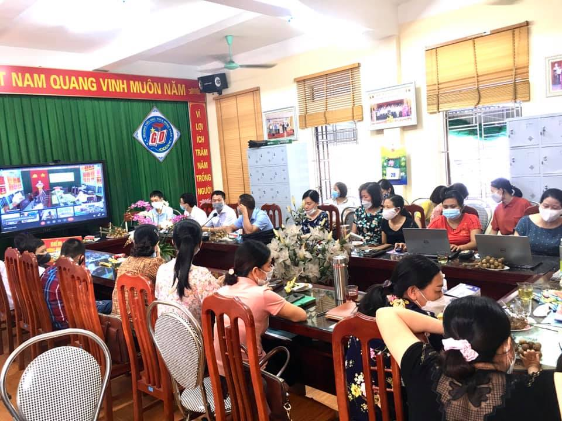